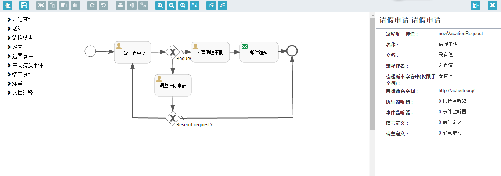
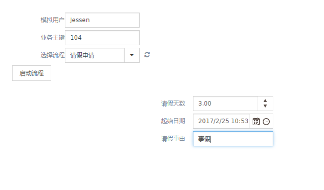
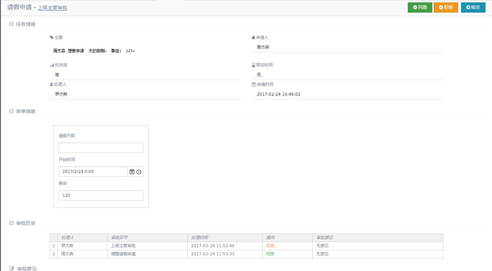
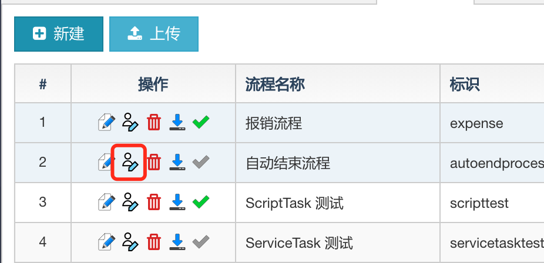
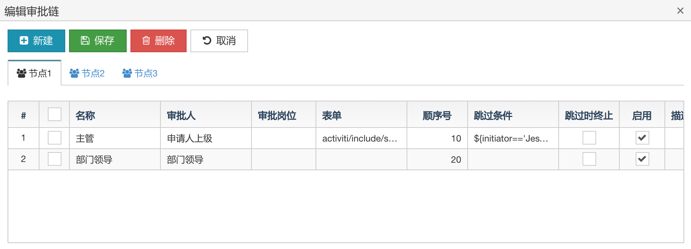

工作流功能说明
1.流程设计
可以新建一个流程或者直接导入BPMN定义文件
hap的演示环境有一些样例，可以下载学习。
以下截图以请假流程为例
使用activiti editor设计流程
如图点击编辑按钮会弹出流程设计器页面 
左边有各种节点，事件等，可以拖拽到中间，右边是当前节点的属性烂
关于常用节点，以及常用属性，参考流程设计器简易教程
2.流程部署
流程设计好以后，点击流程设计页面操作栏的最后一个按钮(勾)即可发布流程
未发布过的流程或者改动过的流程，勾会以绿色展示，反之灰色
发布以后可以在流程部署页面查看部署情况
如果有旧的流程启动了，发布的新版不会影响旧流程的运行
3.流程启动
实际项目中需要客户化开发流程启动页面，参考工作流测试页面
工作流测试页面可以动态解析表单属性，请假流程的启动页面如图所示

4.待办事项与历史流程
可以在我的待办中查看当前登录用户(根据员工号)需要处理的待办事项
管理员可以在
待办事项中(管理员)查看所有人的待办
在待办页面点击办理，即可处理相应事项。

右上角的审批动作可以在通过在流程设计器里设置当前人工任务的表单属性动态生成，默认为
- 同意
- 拒绝
- 转交
对于activiti，审批动作仅仅是传回后台的值不一样
这里的表单信息也需要需要客户化开发的，其实是一个iframe嵌套的页面，会在待办页面自动解析
页面路径在流程设计器里指定当前任务的
表单的标识Keydemo放在view/activiti/include下
历史流程页面可以查看已经结束和正在运行的流程信息
审批链
审批链功能不是 Activiti 的标准功能，属于 HAP 开发的外挂性质的扩展。
功能入口是在 流程设计 界面。

点击 编辑图标 进入该流程的审批链配置界面

在这个编辑页面中，所有的 UserTask 节点会以 标签页的形式自动列出来。
切换标签页，下方表格中的数据会自动刷新为对应节点的数据。
上方的 操作按钮 是针对每个 标签页 操作的，并非针对整个页面。
主要属性说明：
- 名称
自定义，任意。不允许重复。
节点原始名称 和 审批链的名称 拼接起来 作为运行时的名称。 审批人
内置 3 种- 申请人（自己）
- 上级（申请人直接领导）
申请人部门领导
其他情况统统归为
自定义表达式
注意，这个功能要求流程的初始化器（Initiator）必须指定为
initiator审批岗位
支持选择系统中的岗位，也支持自定义的表达式
目前在指定了审批人的情况下，再指定审批岗位是无效果的
- 表单
允许该轮次的审批显示指定的单据明细页面。
如果没有指定，则显示该节点原始设置的值。 - 顺序号
用来控制审批的先后 （目前尚不支持多人同时在同一轮次审批） - 跳过条件
表达式，有值，且值为 true 时，当前轮次跳过。
默认留空，表示不跳过。 - 当前轮次因为
跳过条件被跳过时，是否直接结束审批链 - 启用
高优先级过滤条件（不启用肯定就没有作用） - 描述
无明确用途
在设计器中设计审批节点时，由审批链控制的节点，不需要在去指定 任务派遣，可以完全在审批链中定义。即使指定了，也会被审批链中的值覆盖！
除了与审批人、岗位有关的属性以外，其他属性的含义、作用保持不变。
名称稍微有变化：会和审批链的名称拼接在一起
请注意：目前审批链还不支持多例（会签）
自定义任务超时时间和动态调整优先级
对于人工任务节点，在流程设计器中可以设置任务到期时间
支持ISO8601 标准的日期格式，也可以写流程变量。如PT8H（ISO8601标准支持）,表明该节点的任务的限定时间是8小时。
HAP 实现了一个简单任务，每30分钟执行一次，会动态调整设置了到期日期的任务的优先级。
如何自定义超时时间的计算方式以及自定义优先级调整策略？
实现 ICustomTaskProcessor 即可：
/**
* @param task 任务节点
* 动态设置task的优先级，调用getDueTime，获取任务剩余时间
* 建议不要改动其他属性，仅仅设置优先级
* @return 一般情况返回参数task
*/
Task processPriority(Task task);
/**
* @param startDate task的创建时间
* @param dueTime 当前task的任务的限定时间
*
* 根据task的创建时间和限定时间，返回任务的剩余时间，单位秒
*
* @return 返回经过计算后的任务剩余时间 ,负数表示超时时间
*/
Long getDueTime(Date startDate,Long dueTime);
/**
* 是否继续处理，如果返回false，不会再继续执行其他实现类
* */
boolean processorContinue();
int getOrder();
参考 HAP 提供的一个默认实现 DefaultCustomTaskProcessor
超时时间没做特殊处理，如果剩余时间不足三分之二将优先级上调一级，如果不足三分之一把优先级设置为高。超时则设置为最高（100）
1.首先实现 getDueTime 方法，该方法应该返回实际意义上，当前任务剩余的时间。
比如我们设置了PT8H，但是我们想让这个任务的时效是8个工时，则可以在这里写好处理逻辑
参数
dueTime是一个 Long 类型的参数，它的值是设置的超时时间（比如8小时，任务的dueDate与startDate的时间差）
2.processPriority 方法则可以自定义优先级的调整规则，这里应该调用getDueTime 拿到任务的剩余时间或者超时时间，通过设置一定的规则，调整优先级(task.setPriority(xx))
3.getOrder 方法用于实现类排序，数值越小，执行该实现类的优先级越高，框架的默认实现类order = 999，想只执行自己的实现类，设置一个较小的数值，重写 processorContinue 方法，并返回false 即可